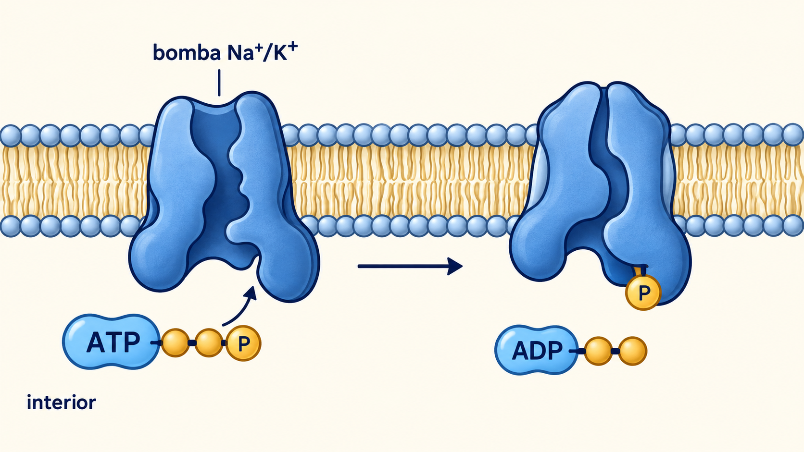
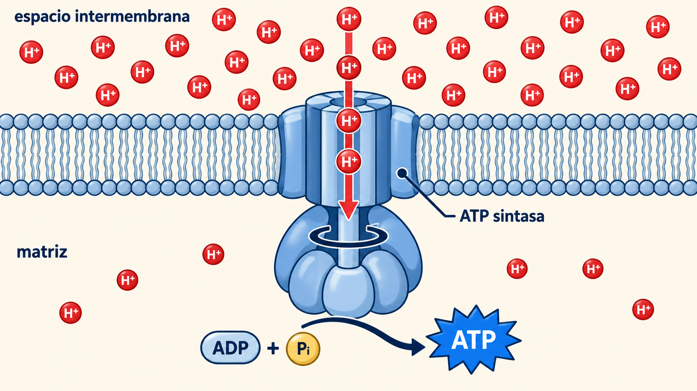
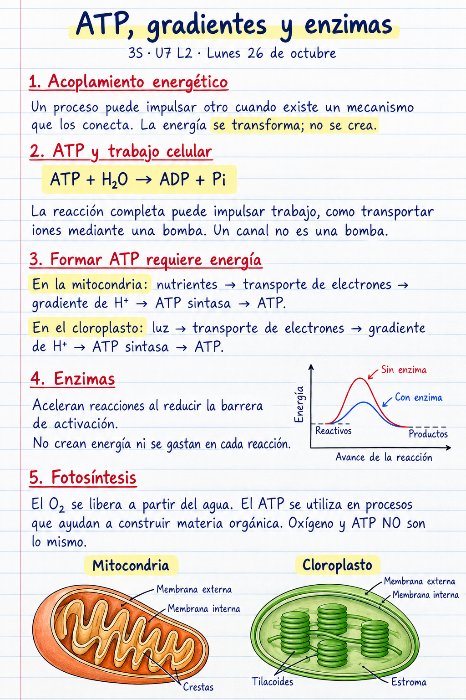

¿Qué conecta ATP y trabajo?

¿Basta con que haya ATP cerca de la proteína?
Una reacción conectada al transporte
ATP + H₂O → ADP + Pi
Bomba
Puede acoplar la reacción del ATP al transporte contra un gradiente.
Canal abierto
Permite paso a favor del gradiente electroquímico.
¿Es lo mismo bombear que dejar pasar?
El gradiente ayuda a formar ATP

Mitocondria
Nutrientes→Gradiente de H⁺→ATP sintasa→ATP
Membrana interna; retorno hacia la matriz.
¿Qué energía mantiene el proceso?
La enzima reduce una barrera
Mismos niveles inicial y final; menor barrera de activación.
¿Acelerar una reacción equivale a crear energía?
En una hoja iluminada
Membrana del tilacoide, dentro del cloroplasto
Luz→Electrones→Gradiente de H⁺→ATP sintasa→ATP
ATP y NADPH participan en construir materia orgánica a partir de CO₂.
El O₂ se libera a partir del agua. O₂ ≠ ATP.
¿Qué podremos observar en el vaso y qué no mediremos?
Explica la conexión
- ¿Cómo se conecta ATP con el trabajo de una bomba?
- ¿Qué necesita la célula para regenerar ATP?
- ¿Qué cambia una enzima y qué no cambia?
Una explicación individual con esquema. El ensayo de hoja no mide ATP.
Notas de cuaderno
